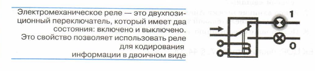
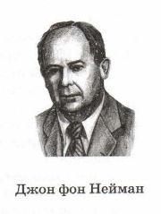
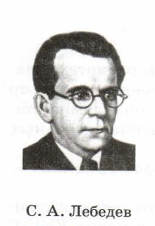
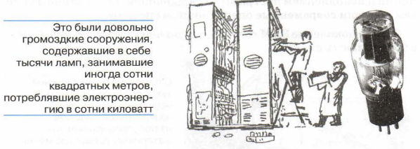
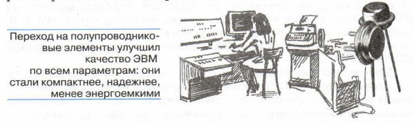
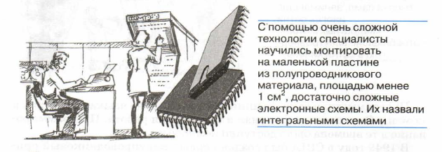
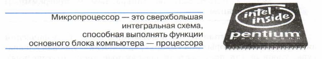
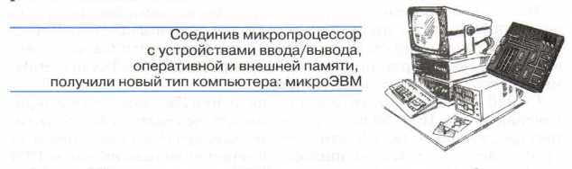
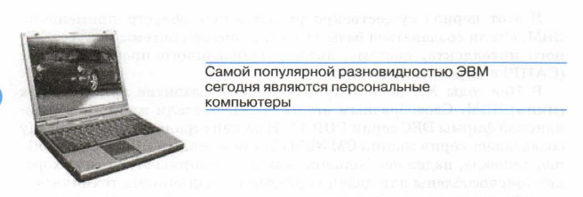
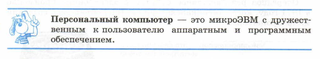

§23 История ЭВМ
Основные темы параграфа:
= счетно-перфорационные и релейные машины;
= начало эпохи ЭВМ;
= четыре поколения ЭВМ;
= перспективы пятого поколения;
= вопросы и задания.
В § 22 рассказывалось о проекте Чарльза Бэббиджа — первой в истории попытке создания программно управляемого
вычислительного автомата. Боббиджу так и не удалось построить свою
аналитическую машину, используя техническую базу середины
ХIХ столетия. К концу ХIХ — началу ХХ века с развитием электротехники появилась возможность снова вернуться к этой проблеме.
Счетно-перфорационные и релейные машины
Счетно-перфорационные и релейные машины
В конце ХГХ века Герман Холлерит в Америке изобрел счетно-перфорационные машины. В них, так жекак ив Аналитической
машине Бэббиджа, использовались перфокарты, но только не для
представления программы, а для хранения числовой информации.
Каждая такая машина могла выполнять только одну определенную
программу, манипулируя с числами, пробитыми на перфокартах.
Счетно-перфорационные машины осуществляли перфорацию, сор.
тировку, суммирование, вывод на печать числовых таблиц. На этих
машинах удавалось решать многие типовые задачи статистической
обработки, бухгалтерского учета и др.
Г. Холлерит основал фирму по выпуску счетно-перфорационных
машин, которая затем была преобразована в фирму 1ВМ, которая
ныне является самым известным в мире производителем компью-
теров.
Непосредственными предшественниками ЭВМ были релейные
вычислительные машины. К 30-м годам ХХ века получила большое
развитие релейная автоматика.
В процессе работы релейной машины происходят переключения
тысяч реле из одного состояния в другое.

Релейная машина «Марк-2», изготовленная в 1947 году, содержала около 13 000 реле. Одной из наиболее совершенных релейных
машин была машина советского конструктора Н. И. Бессонова —
РВМ-1. Она была построена в 1956 году и проработала почти 10 лет,
конкурируя с существовавшими уже в то время ЭВМ. Поскольку
реле — это механическое устройство, то его инерционность (задерж-
ка при переключении) достаточно велика, что сильно ограничивало
скорость работы таких машин. Скорость РВМ-1 составляла 50 сложений или 20 умножений в секунду. Практически это был предел
скорости для машин этого типа.
Начало эпохи ЭВМ
В первой половине ХХ века бурно развивалась радиотехника.
Основным элементом радиоприемников и радиопередатчиков в то
время были электронно-вакуумные лампы. Электронные лампы стали технической основой для первых электронно-вычислительных
машин (ЭВМ).
Первая ЭВМ — универсальная машина на электронных лампах —
была построена в США в 1945 году.
Эта машина называлась ЕМТАС (расшифровывается так: электронный цифровой интегратор и вычислитель). Конструкторами ЕМТАС
были Дж. Моучли и Дж. Эккерт. Скорость счета этой машины превосходила скорость релейных машин того времени в тысячу раз.
Первый электронный компьютер ЕМТАС программировался с помощью штекерно-коммутационного способа, т. е. программа строилась
путем соединения проводниками отдельных блоков машины на
коммутационной доске. Эта сложная и утомительная процедура
подготовки машины к работе делала ее неудобной в эксплуатации.

В 1946 году в журнале Мафиге вышла статья
Дж. фон Неймана, Г. Голдстайна и А. Беркса
«Предварительное рассмотрение логической
конструкции электронного вычислительного
устройства». В этой статье были изложены принципы устройства и работы ЭВМ. Главный из
них — принцип хранимой в памяти программы, согласно которому данные и программа по-
мещаются в общую память машины.
Принципиальное описание устройства и работы компьютера принято называть архитектурой ЭВМ. Идеи, изложенные в упомянутой
выше статье, получили название «архитектура ЭВМ Дж. фон Неймана».
В 1949 году была построена первая ЭВМ с архитектурой Неймана — английская машина ЕОЗАС. Годом позже появилась американская ЭВМ ЕРУАС.
Названные машины существовали в единственных экземплярах. Серийное производство ЭВМ началось в развитых странах мира в 50-х годах ХХ века.

Велика роль академика С. А. Лебедева в создании отечественных компьютеров. Под его руководством в 1950-х годах были построены
серийные ламповые ЭВМ БЭСМ-1 (Большая электронная счетная
С.А. Лебедев — Машина), БЭСМ-2, М-20. В то время эти машины
были одними из лучших в мире.
В 60-х годах ХХ века С. А. Лебедев руководил разработкой полупроводниковых ЭВМ БЭСМ-3М, БЭСМ-4, М-220, М-222.
Выдающимся достижением того периода была машина БЭСМ-6. Это первая
отечественная и одна из первых в мире ЭВМ с быстродействием один
миллион операций в секунду. Последующие идеи и разработки
С. А. Лебедева способствовали созданию более совершенных машин
следующих поколений.
Четыре поколения ЭВМ
Электронно-вычислительную технику принято делить на поколения. Смены поколений чаще всего были связаны со сменой элементной базы ЭВМ,
с прогрессом электронной техники. Это всегда приводилок росту вычислительной мощности ЭВМ, т.е. быстродействия и
объема памяти. Но это не единственный признак смены поколений.
При таких переходах, как правило, происходили существенные изменения в архитектуре ЭВМ, расширялся круг задач, решаемых
на ЭВМ, менялся способ взаимодействия между пользователем и
компьютером.
Первое поколение ЭВМ — ламповые машины 50-х годов ХХ века.
Скорость счета самых быстрых машин первого поколения доходила
до 20 тысяч операций в секунду (ЭВМ М-20). Для ввода программ и
данных использовались перфоленты и перфокарты. Поскольку
внутренняя память этих машин была невелика (могла вместить
в себя несколькотысяч чисел и команд программы), то они, главным
образом, использовались для инженерных и научных расчетов, не
связанных с переработкой больших объемов данных.

Программы для таких машин составлялись на языках машинных
команд. Это довольно сложная и трудоемкая работа. Программирование в те времена было доступно немногим.
В 1949 году в США был создан первый полупроводниковый прибор, заменяющий электронную лампу. Он получил название
«транзистор». Транзисторы быстро внедрялись в радиотехнику.
В 60-х годах ХХ века транзисторы стали элементной базой
для ЭВМ второго поколения.

Большое развитие получили устройства внешней (магнитной) памяти: магнитные барабаны, накопители на магнитных лентах (НМЛ).
Благодаря этому появилась возможность создавать на ЭВМ информационно-справочные, поисковые системы, позволявшие длительно хранить на магнитных носителях большие объемы информации.
Во времена второго поколения активно стали развиваться языки
программирования высокого уровня. Первыми из них были
ФОРТРАН, АЛГОЛ, КОБОЛ. Составление программы перестало зависеть от модели машины, сделалось проще, понятнее, доступнее.Программирование как элемент грамотности стало широко распространяться в системе высшего образования.
Появились мониторные системы, управляющие режимом трансляции и исполнением программ. В дальнейшем из мониторных систем выросли современные операционные системы.
Третье поколение ЭВМ создавалось на новой элементной базе —
интегральных схемах.

Первые интегральные схемы (ИС) содержали в себе десятки, затем сотни элементов (транзисторов, сопротивлений и др.).
Когда степень интеграции (количество элементов) приблизилась к тысяче, их
стали называть большими интегральными схемами — БИС; затем
появились сверхбольшие интегральные схемы — СБИС.
ЭВМ третьего поколения начали производиться во второй половине 60-х годов прошлого века. Тогда американская фирма 1ВМ
приступила к выпуску системы машин 1ВМ-360. Это были машины на
ИС. Немного позднее стали выпускаться машины серии 1ВМ-370,
построенные на БИС. В Советском Союзе в 70-х годах ХХ века начался выпуск машин серии ЕС ЭВМ (Единая система ЭВМ) по образцу
ТВМ-360/370.
Переход к третьему поколению связан с существенными изменениями архитектуры ЭВМ. Появилась возможность выполнять
одновременно несколько программ на одной машине. Такой режим работы
называется мультипрограммным (многопрограммным) режимом.
Скорость работы наиболее мощных моделей ЭВМ достигла нескольких миллионов операций в секунду. На машинах третьего поколения появился новый тип внешних запоминающих устройств —
магнитные диски. Как и на магнитных лентах, на дисках можно
хранить большое количество информации. Вместе с тем накопители
на магнитных дисках (НМД) работают гораздо быстрее, чем НМЛ.
Широко стали использоваться новые типы устройств ввода/вывода:
дисплеи, графопостроители.
В этот период существенно расширились области применения
ЭВМ. Стали создаваться базы данных, первые системы искусственного интеллекта, системы автоматизированного проектирования
(САПР) и управления (АСУ).
В 70-е годы ХХ века получила мощное развитие линия малых
(мини) ЭВМ. Своеобразным эталоном здесь стали машины американской фирмы ПЕС серии РОР-11. В нашей стране по этому образцу.
создавалась серия машин СМ ЭВМ (Система малых ЭВМ). Они меньше, дешевле, надежнее больших машин. Машины этого типа
хорошо приспособлены для целей управления различными техническими объектами: производственными установками, лабораторным
оборудованием, транспортными средствами. По этой причине их называют управляющими машинами. Во второй половине 70-х годов
ХХ века производство мини-ЭВМ превысило производство больших
машин.
Очередное революционное событие в электронике произошло
в 1971 году, когда американская фирма уе! объявила о создании
микропроцессора.

Микропроцессор — это миниатюрный «мозг», работающий по
программе. Первоначально микропроцессоры стали встраивать в
различные технические устройства: станки, автомобили, самолеты.

МикроЭВМ относятся к ЭВМ четвертого поколения. Существенным отличием микроЭВМ от своих предшественников являются их
малые габариты (размеры бытового телевизора) и сравнительная дешевизна. Это первый тип компьютеров, который появился в розничной продаже.

Появление феномена персональных компьютеров (ПК) связано с
именами двух американских специалистов: Стива Джобса и Стива
Возняка. В 1976 году на свет появился их первый серийный ПК
Аррlе-1, ав 1977 году — Аррlе-2.

В аппаратном комплекте ПК используется цветной графический
дисплей, манипуляторы типа «мышь», «джойстик», удобная клавиатура, удобные для пользователя компактные диски (оптические).
Программное обеспечение позволяет человеку легко общаться с машиной, быстро усваивать основные приемы работы с ней, получать
пользу от компьютера, не прибегая к программированию. Общение
человека и ПК может принимать форму игры с красочными картинками на экране, звуковым сопровождением.
Неудивительно, что машины с такими свойствами быстро приобрели популярность, причем не только среди специалистов.
Персональный компьютер становится такой же привычной бытовой техникой, как радиоприемник или телевизор. Их выпускают огромными тиражами, продают в магазинах.
С 1980 года «законодателем мод» на рынке ПК становится американская фирма 1ВМ. Ее конструкторам удалось создать такую архитектуру, которая стала фактически международным стандартом на
профессиональные ПК. Машины этой серии получили название ВМ
РС (Регзопа! Сотрибег).
В конце 80-х — начале 90-х годов ХХ века большую популярность
приобрели машины фирмы Арре Согрогайоп марки МасниозВ.
В США они широко используются в системе образования.
Появление и распространение ПК по своему значению для
общественного развития сопоставимо с появлением книгопечатания. Именно ПК сделали компьютерную грамотность массовым явлением. Развитие этого типа машин вызвало появление понятия
«информационные технологии», без которых уже становится невозможным обойтись в большинстве областей деятельности человека.
Есть и другая линия в развитии ЭВМ четвертого поколения.
Это суперкомпьютеры. Машины этого класса имеют быстродействие в сотни миллионов и миллиарды операций в секунду. Только
суперкомпьютеры могут справиться с обработкой больших объемов
информации, например статистическими данными по переписи населения, результатами метеорологических наблюдений, финансовой информацией. Иногда скорость обработки информации имеет
решающее значение. Примером может служить составление протноза погоды, моделирование климатических изменений, позволяющее предсказать стихийное бедствие (цунами, тайфун, землетрясение и т. д.).
Суперкомпьютер — это многопроцессорный вычислительный
комплекс. Высокое быстродействие достигается благодаря тому, что
множество процессоров, его составляющих, осуществляют параллельную (одновременную) обработку данных.
Суперкомпьютеры являются дорогими машинами, стоимость которых может достигать десятков миллионов долларов. Поэтому возникает
проблема доступности таких дорогих вычислительных ресурсов. Решение этой проблемы связано с созданием многопользовательских суперкомпьютерных центров.
В качестве альтернативы суперкомпьютерам создаются так называемые кластерные системы. Кластерная система — это сеть из множества рабочих станций на базе ПК. Чтобы рабочие станции функционировали как многопроцессорная вычислительная система, в
такой сети используется специальное программное обеспечение.
Оказалось, что можно построить многопроцессорный комплекс — кластер, который лишь в 2—3 раза уступает по быстродействию суперкомпьютеру, но дешевле его в сотни раз. В крупных российских университетах и научных центрах установлены и активно
используются кластерные системы.
Перспективы пятого поколения
ЭВМ пятого поколения — это машины недалекого будущего.
Основным их качеством должен быть высокий интеллектуальный
уровень. Машины пятого поколения — это реализованный искусственный интеллект. В них будет возможен ввод с голоса, голосовое общение, машинное «зрение», машинное «осязание». Многое
уже практически сделано в этом направлении.
Коротко о главном
‾‾‾‾‾‾‾‾‾‾‾‾‾‾‾‾‾‾‾‾‾‾‾‾‾‾
Появлению ЭВМ предшествовали счетно-перфорационные и релейные машины.
ЭВМ первого поколения — ламповые машины (50-е годы ХХ века).
ЭВМ второго поколения — полупроводниковые машины (60-е
годы ХХ века).
ЭВМ третьего поколения — машины на интегральных схемах
(вторая половина 60-х годов).
Персональные компьютеры и суперкомпьютеры (многопроцессорные вычислительные комплексы) относятся к машинам четвертого поколения (70-е годы ХХ века).
ЭВМ пятого поколения — машины, основанные на искусственном
интеллекте.
Вопросы и задания
‾‾‾‾‾‾‾‾‾‾‾‾‾‾‾‾‾‾‾‾‾‾‾‾‾‾
1. Когда и кем были изобретены счетно-перфорационные машины? Какие
задачи на них решались?
2. Что такое электромеханическое реле? Когда создавались релейные вычислительные машины? Каким быстродействием они обладали?
3. Где и когда была построена первая ЭВМ? Как она называлась?
4. Какова роль Джона фон Неймана в создании ЭВМ?
5. Кто был конструктором первых отечественных ЭВМ?
6. Накакой элементной базе создавались машины первого поколения? Каковы были их основные характеристики?
7. На какой элементной базе создавались машины второго поколения?
В чем их преимущества по сравнению с первым поколением ЭВМ?
8. Что такое интегральная схема? Когда были созданы первые ЭВМ на интегральных схемах? Как они назывались?
9. Какие новые области применения ЭВМ возникли с появлением машин
третьего поколения?
10. Что такое микропроцессор? Когда и где был создан первый микропроцессор?
11. Что такое микроЭВМ и персональный компьютер?
12. Какие типы ПК наиболее распространены в мире?
13. Что такое суперкомпьютер?
14. Что такое кластерные системы ПК?
15. В чем особенность компьютеров пятого поколения?
16. Подготовьте сообщения по темам заданий 1-15 для школьного сайта.
Тест по §23 |